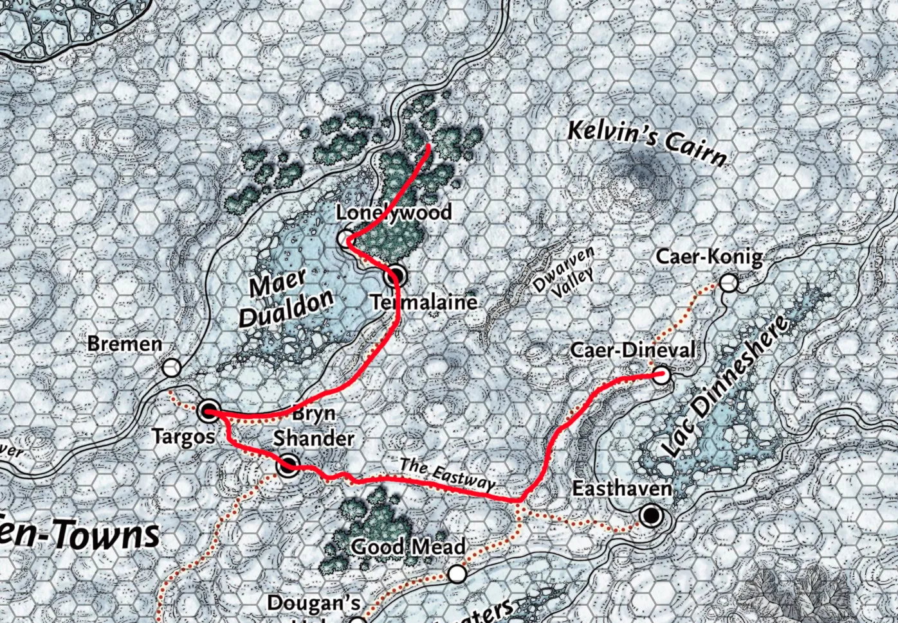

Session 3

Dag 7 (nogsteeds)¶
We bevinden ons nog bij de Elven Tombe, hebben in de vorige sessie de White moose verslagen. Drawr Poof (Lars) doet detect magic en merkt dat er nog magie in de buurt is, komt uit de grotten in de berg. Daar gaan we naartoe en zien een spiegel staan. Links en rechts zijn gangen, magie komt van rechts en die gang gaan we in.
Het is een grote ruimte met een dome als plafond, er komt licht vanaf buiten naar binnen door een gat bovenin de dome. In de ruimte zien we tekenen van iemand die daar leeft/woont.
Opeens worden we aangevallen door een vrouw! Transformeert in een aalbeer en we gaan het gevecht aan. Halverwege transformeert ze terug in haar eigen vorm (mensen die kunnen tranformeren in dieren hebben 2 health stats: die van het dier en van henzelf) Uiteindelijk wordt ze gedood.
Meteen checken of er nog magie in de buurt is: komt achter de Elven Tombe vandaan. Drawr Poof (Lars) loopt er naartoe en ziet een levend Aalbes Boompje (Groot) (we noemen m Groot) wegkruipen en smeekt om hem geen pijn te doen. Is opgelucht dat we de vrouw (Rafishin) hebben verslagen.
Rafishin beschuldigd de 10 towns van de moord van haar zus. Ze ontwaakt beesten en planten om tegen de 10 towns op te zetten, als wraak. (iets met een Plesiosaurus?)
De spiegel had iets met een moonbeam spell waardoor Rafishin ons kon zien aankomen, daardoor wist ook de white moose waar wij waren enzo.
De tombe is van de zus van Rafishin, we besluiten ‘m te openen. Erin zitten 2 potions: een health en vitality potion en een haaienhuid. Dit nemen we mee.
De rechter gang leidt naar een identieke maar gespiegelde tombe, ook dat graf duwen we open en vinden we: een boog zonder pees, 6 zilveren pijlpunten, houten mok met een vliegende vis erin gegraveerd.
Na dit geheel gaan we terug naar Nincy Huddle en updaten we haar van wat er is gebeurt. Ze is heel blij dat de moose weg is en als reward bakt ze allemaal lekkers voor ons.
Skog Traustur (Jesse) gaat in Lonelywood ❄️ nog opzoek naar Danika Graysteel om meer te weten te komen over de Chingra’s. Kan haar helaas niet vinden. Wel deze quests:
In Bryn Shander ❄️, Dwergen die goed betalen voor het vinden van hun verloren lading
In Targos ❄️, Avonturiers die op expeditie gaan naar Kelvin's Cairn, op zoek naar een Goliath lycantrope (kan veranderen in een ijsbeer)
Nacht Nacht Nacht Nacht Nacht Nacht Nacht Nacht
Dag 8¶
We beginnen met onze reis richting Bryn Shander ❄️, tijdens de reis krijgen we weer een aantal nieuwe quests:
Nabina Moarskull, is een visser in Easthaven ❄️. Heeft een magische vishaak om magische vissen te vangen maar is aangevallen door Grolls (wolfmens) en hebben haar vermoord en de vishengel gestolen. Jagers hebben hun geprobeerd te achtervolgen maar staakten hun zoektocht bij een grote scheur in de grond.
Bij Bremen ❄️ en dan naar het noorden is een piratenschip vastgevroren. Niemand weet waar het vandaan komt, maar weten wel dat het voorlopig nergens heen gaat en vol met schatten zit.
Reged Nomad zijn dé personen om verstopte dingen in Icewind Dale te vinden. Ze kennen het gebied heel goed. Is wel heel lastig deze mensen te vinden, enige wat bekend is dat ze de Rendier kudde volgen.
“Deze winter komt niet door de auriel, maar door de Archin Brotherhood die de 10 towns willen overnemen! Vaelish Gant is verantwoordelijk, zit momenteel gevangen in Revils End, maar is daardoor niet minder gevaarlijk!”
Weinig goliaths meer. Dat kan veranderen als de ruzie tussen de 2 goliath clans opgelost wordt. Is te vinden in The Spine of the World.
Deze quests krijgen we omdat onze reputation beter wordt door de goede daden die we hebben gedaan.
We komen aan in Targos ❄️!
Zien een slee die wordt getrokken door een Boy (hond) maar niemand zit op de slee. We volgen de hond richting een huis. Een man (Keegan Velrim) doet open, vraagt ons om binnen te komen. Verteld dat zijn man Gereth Velrim een guide is, en werd gehuurd door avonturiers om bij Caer-Konig ❄️ een berg te beklimmen. Boy (hond) zou nooit de zijde van zijn baasje (Gereth Velrim) verlaten. Iets met Kelvin's Cairn (berg)
Door Speach with Animals van Elena Footshadow (Lies) weten we wat Boy (hond) zich herinnert: yeti heeft het kamp aangevallen, Gereth Velrim heeft de groep gered door de Yeti (lvl 9) af te leiden, maar weten niet waar hij nu is.
We gaan slapen in een taverne
Nacht Nacht Nacht Nacht Nacht
Dag 9¶
Verder reizen naar Bryn Shander ❄️, daar kwamen we Hlin Trolbane weer tegen in The Northlook. Ze stelt veel vragen en wij antwoorden. Ze gelooft ons en geeft onze reward, maar zal snel genoeg merken of de moorden nu gestopt zijn. Geeft ook aan dat we moeten oppassen voor torga.
Midwinter is richting de Reghed Glacier, waar precies kunnen we ook aan goliaths vragen.
Revil's End is een gevangenis, vlakbij de zee van bewegend ijs (sea of moving ice)
en nu zijn we in Caer-Denival ❄️!
Ferry vaart niet meer waardoor ze geen vlees meer krijgen uit good mead, daardoor is het water bevroren. De dorpsspreker (Kranok) is ziek en kon anderen niet overtuigen om de ferry terug te laten komen. Inwoners zijn heel boos want er is dus ook geen drank meer.
Dorpsspreker zit in kasteel The Caer (Dessert).
The Uphill Climb willen we in overnachten. We lopen binnen met een geweldig dansje, er is een fantastisch uitzicht. We krijgen een gaar drankje (er is geen drank helaas). De eigenaar is ongeveer 45 en is een mens. Zegt dat er geen slaapplekken zijn voor ons.
Bij kasteel The Caer staan beveiligers, ze laten ons niet toe, al helemaal niet als we de health potion als hulp aanbieden.
Dan toch maar naar Dinev's Rest, een taverne die gestopt is. Skog Traustur (Jesse) vertrouwt het niet en slaapt daarom dus in de koude Ruined Watchtower.
Nacht Nacht Nacht Nacht Nacht
Dag 10¶
Skog Traustur (Jesse) wordt wakker met Inspiration, de rest heeft het gevoel dat ze snachts bekeken werden.
EINDE SESSIE
oja en volgende sessie een tweede persoon notuleren zodat we zeker weten dat we niets qua info missen.
Links mentioned
No links.